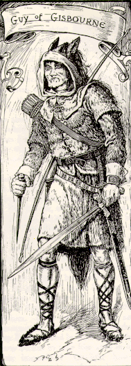
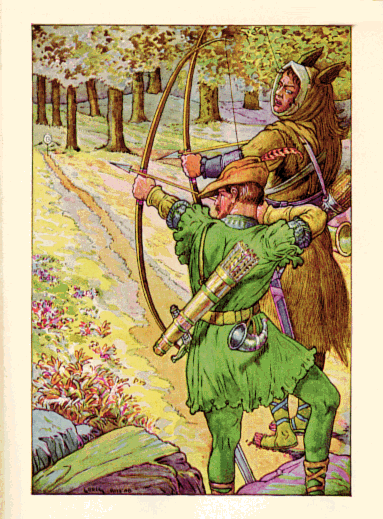
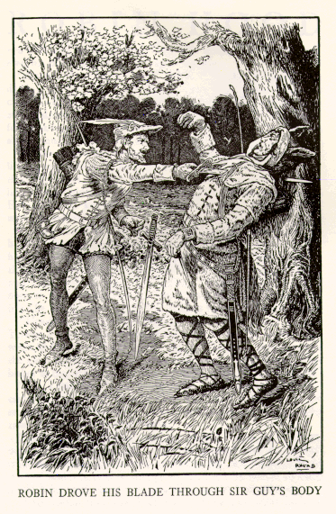

These are the only illustrations that I know of, which show Guy of Gisbourne
in his horse hide.

Guy of Gisbourne
by
Louis Rhead

Robin Shoots with Sir Guy
by
Louis Rhead

Robin Drove His Blade Through Sir Guy's Body
by
Louis Rhead
All taken from: Rhead, Louis. Bold Robin Hood and His Outlaw Band: Their Famous Exploits in Sherwood Forest. New York: Blue Ribbon Books, 1912.

Back to main page
Back to the Ballad of Robin Hood and
Guy of Gisbourne